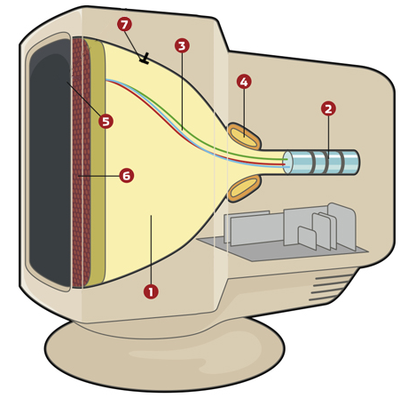
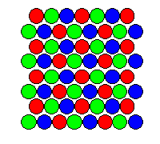
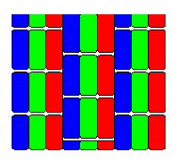
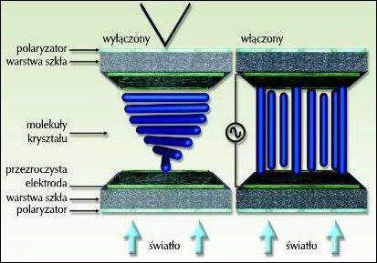
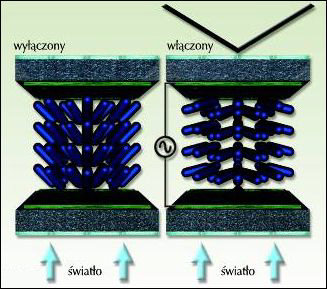
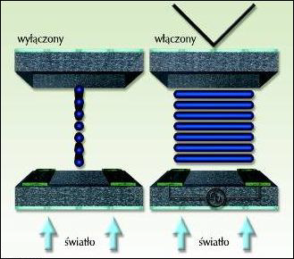
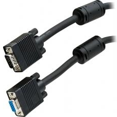
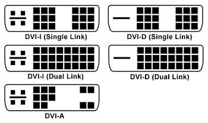
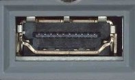
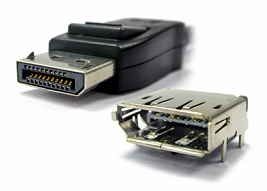

- Monitory kineskopowe CRT
- Monitory ciekłokrystaliczne LCD
- Sposoby podłączenia monitorów
- Dodatkowe informacje
Budowa monitora CRT
CRT to akronim od Cathode-Ray Tube, czyli lampy kineskopowej wyposażonej w działo elektronowe. W języku polskim pod tym słowem przyjęto potoczną nazwę skrótową, synonim dla wyrażenia monitor CRT – czyli oznaczenie modeli monitorów komputerowych, których wyświetlacz oparty jest na lampie obrazowej zwanej kineskopem. Właściwe określenie to monitor kineskopowy.

[1] lampa katodowa (kineskopowa) w formie szklanej próżniowej tuby
[2] działa elektronowe wraz z układami skupiającymi wiązki
[3] wiązki elektronów
[4] cewka odchylająca
[5] luminofor
[6] maska
[7] anoda
[2] działa elektronowe wraz z układami skupiającymi wiązki
[3] wiązki elektronów
[4] cewka odchylająca
[5] luminofor
[6] maska
[7] anoda
Zasada działania monitora CRT
Zasada tworzenia obrazu w kolorowym monitorze CRT polega na wysyłaniu w kierunku przedniej szyby powleczonej warstwą luminoforu, trzech wiązek elektronów (po jednej dla każdego składowego koloru RGB) za pomocą trzech dział elektronowych umieszczonych w tylnej części próżniowej tuby kineskopu. Wiązki te są kierowane za pomocą silnego pola magnetycznego (cewki odchylające) tak, aby trafiały w odpowiedni obszar na luminoforze.Luminofor jest to świecący pigment (fosfor), materiał mający własności świecenia pod wpływem padającego nań promieniowania. Tworząc obraz wiązki przemiatają ekran wzdłuż pojedynczej poziomej linii, zwanej linią wybierania, od lewej do prawej, rozświetlając punkty luminoforu i powodując ich jaśniejsze bądź ciemniejsze świecenie, w zależności od chwilowego napięcia sterującego działem elektronowym.
Częstotliwość pozioma
częstotliwość z jaką monitor rysuje pojedynczą linię obrazu, mierzona w kilohercach [kHz]
Po narysowaniu linii obrazu i osiągnięciu prawego brzegu ekranu wiązki są chwilowo wygaszane, po czym cewki odchylające kierują je na początek następnej linii ku dołowi ekranu i proces następuje od nowa, aż do zapełnienia całego ekranu linia po linii. Gdy cały ekran się zapełni, wiązki znowu zostają wygaszone, po czym cały cykl rysowania obrazu zaczyna się od nowa od góry ekranu (od pierwszej linii).
Częstotliwość odświeżania (pionowa)
częstotliwość z jaką monitor rysuje cały ekran (wszystkie linie obrazu) - podawana w hercach [Hz].
Aby uniknąć migotania ekranu i zmęczenia oczu, obraz w pionie powinien być rysowany 85 razy w ciągu
sekundy (częstotliwość odświeżania 85 Hz)
Rodzaje masek w monitorach CRT
Przed warstwą luminoforu znajduje się tzw. maska (ang. shadow mask), która pełni funkcję filtru dbającego o to, aby elektrony uderzały idealnie w powierzchnię wyznaczonych pól luminoforu (subpikseli) - co pozytywnie wpływa na jakość obrazu.

perforowana (IBM Delta)
perforowana (IBM Delta)

szczelinowa
(Trinitron, Diamondtron)

szczelinowo-perforowana
(NEC Cromaclear)
szczelinowo-perforowana
(NEC Cromaclear)
Maska perforowana
występowała w pierwszych monitorach CRT, została opracowana przez firmę IBM. Jej największą wadą
jest zbyt duża powierzchnia, co wpływa na obniżenie jasności obrazu
Maska szczelinowa
została po raz pierwszy zastosowana w kineskopach NEC Cromaclear. Stanowi kompromis między dwoma
poprzednimi rozwiązaniami - kosztem nieznacznej utraty jakości obrazu zrezygnowano z dwóch drutów
stabilizujących. Również koszt produkcji tej maski jest dużo niższy
Maska szczelinowo-perforowana
częstotliwość z jaką monitor rysuje pojedynczą linię obrazu, mierzona w kilohercach [kHz]
Wady i zalety monitorów CRT
Wybór rodzaju monitora zależy najbardziej od jego przeznaczenia. Monitory CRT zostały praktycznie całkowicie wyparte z rynku przez monitory ciekłokrystaliczne, niemniej jednak niektóre ich unikatowe właściwości sprawiają, iż nadal używają ich np. fotografowie.
Zalety monitorów kineskopowych
szybki czas reakcji, wieloczęstotliwość (możliwość zmiany rozdzielczości), wierne odwzorowanie
kolorów, duże kąty widzenia obrazu.
Wady monitorów kineskopowych
średnia jasność i kontrast obrazu, duże gabaryty i waga monitora (stąd trudniejsza regulacja), duży
pobór mocy, zawsze istniejąca wypukłość ekranu, częstotliwość odświeżania ma istotny wpływ na jakość
obrazu oraz zmęczenie oczu, wyższa emisja promieniowania elektromagnetycznego.
Dobór parametrów monitora CRT
W monitorach CRT rzeczywista powierzchnia robocza ekranu jest nieco mniejsza niż deklaruje producent, a to z powodu wypukłości ekranu, które zawsze występują w monitorze kineskopowym. Nawet w najnowszych modelach mających prawie płaskie ekrany (FST - Flat Square Tube) występują niewielkie wypukłości poziome.
Użyteczny rozmiar ekranu
wymiar przekątnej ekranu monitora (wyrażony w calach)
Obecnie w monitorach CRT standardowymi rozdzielczościami są np. 1024×768 (XVGA), 1280×1024 (SXGA) oraz 1600×1200 (UXGA). Ze względu na możliwość wyświetlania wielu rozdzielczości (wieloczęstotliwość) ważne jest tylko, aby monitor zapewnił odpowiednią częstotliwość odświeżania pionowego dla wysokiej rozdzielczości.
Rozdzielczość
parametr określający liczbę pikseli obrazu wyświetlanego na ekranie w bieżącym trybie pracy monitora
komputerowego; rozdzielczość wyrażana jest w postaci liczby pikseli obrazu w poziomie i w pionie
W monitorze CRT fizyczny piksel ułożony na powierzchni ekranu nie przekłada się bezpośrednio na piksel "komputerowy" rozumiany jako najmniejszy element obrazu przetwarzanego przez kartę graficzną. Najczęściej w przypadku pracy z monitorem CRT na pojedynczy piksel obrazu komputerowego generowanego przez kartę graficzną przekłada się na kilkanaście pikseli fizycznych maski.
Dlatego aby semantycznie odróżnić pojęcie piksela obrazu przesyłanego z karty graficznej oraz piksela rzeczywistego kineskopu wprowadzono pojęcie plamki. Im mniejsza plamka, tym elementy są gęściej rozmieszczone, co przekłada się na lepszą ostrość obrazu. Najczęstsze wielkości plamki: 0.2mm; 0.24mm; 0.25mm; 0.28mm.
Rozmiar plamki w monitorze CRT
odległość w [mm] pomiędzy dwoma pikselami (triadami) w danym kineskopie.
W monitorach kineskopowych (CRT) wyróżnia się poziomą i pionową częstotliwość odświeżania. Częstotliwość odświeżania pionowego informuje, ile razy na sekundę rysowany jest cały ekran. Częstotliwość odświeżania poziomego określa, ile razy w ciągu sekundy wiązka elektronów jest w stanie narysować linię poziomą. Częstotliwość pozioma ma bardzo dużą wartość (wyrażoną w kilohercach), więc z czysto praktycznego punktu widzenia ma małe znaczenie.
Mówiąc więc o częstotliwości odświeżania mamy zawsze na myśli częstotliwość pionową. Częstotliwość poniżej 80Hz szybko zmęczy oczy (widoczne migotanie obrazu), optymalnie powinna wynosić 85-100Hz przy danej rozdzielczości.
Częstotliwość odświeżania w monitorze CRT
określa, ile razy w ciągu sekundy cały obraz (wszystkie linie) jest wyświetlany na ekranie monitora;
wyrażona w hercach [Hz].
Budowa monitora LCD
LCD to akronim od Liquid Crystal Display - wyświetlacz ciekłokrystaliczny to urządzenie, którego zasada działania oparta jest na zmianie polaryzacji światła na skutek zmian orientacji cząsteczek ciekłego kryształu pod wpływem przyłożonego pola elektrycznego.
[1] filtr polaryzacyjny
[2] szklane podłoże
[3] przezroczyste elektrody
[4] warstwa wyrównująca
[5] ciekłe kryształy
[6] filtry koloru
[2] szklane podłoże
[3] przezroczyste elektrody
[4] warstwa wyrównująca
[5] ciekłe kryształy
[6] filtry koloru
Zasada działania monitora LCD
Zasada tworzenia obrazu w kolorowym monitorze LCD jest nieco inna niż w monitorach CRT. Zrezygnowano z działa elektronowego, dzięki czemu monitor ma dużo mniejsze gabaryty i wagę. Źródłem światła są najczęściej cienkie lampy jarzeniowe (albo diody LED w dużo droższych monitorach ledowych). Światło jest przepuszczane przez filtr polaryzacyjny, który przepuszcza fale świetlne o określonej fazie. Następnie strumień światła tafia na filtr z poziomymi szczelinami, po czym przechodzi przez warstwę polikrzemową zwaną ciekłymi kryształami i trafia na drugi filtr z pionowymi szczelinami.Jeżeli strumień światła nie zostanie załamany o 90° przez warstwę ciekłych kryształów, to światło zostanie całkowicie zatrzymane na drugim filtrze. Jeżeli jednak strumień światła zostanie załamany o 90° przez molekuły ciekłych kryształów, to światło zostanie podane na ekran. Molekułami ciekłych kryształów sterujemy za pomocą tranzystorów - podanie napięcia powoduje odpowiednie zorientowanie cząstek i załamanie strumienia światła o 90° (wzbudzenie). Każdy piksel w monitorze LCD składa się z trzech (tzw. triada) subpikseli odpowiadających kolorom RGB. Każdy subpiksel jest sterowany niezależnie oddzielnym tranzystorem.
Dead pixel (martwy piksel)
to subpiksel, który nie zmienia swojej barwy lub się nie wzbudza - np. w wyniku awarii tranzystora
sterującego - brak załamania strumienia światła
Podział matryc w monitorach LCD
Matryce pasywne stosowano w początkach technologii LCD - pojedyncze tranzystory sterowały całymi wierszami i kolumnami pikseli. Monitory oparte na matrycach pasywnych smużyły (miały wolny czas reakcji, pojawiały się smugi i cienie).W matrycach aktywnych każdy subpiksel sterowany jest oddzielnym tranzystorem cienkowarstwowymi (ozn. TFT - Thin Film Transistor)
Matryce Twisted Nematic

Przyłożenie napięcia powoduje obrót cząstek ciekłego kryształu do pozycji prostopadłej do płaszczyzn
elektrod na przeciwległych ściankach ekranu, co skutkuje zablokowaniem światła.
Mają krótki czas reakcji (poniżej 8ms), ale małe kąty widzenia oraz słabe odwzorowanie kolorów.
Mają krótki czas reakcji (poniżej 8ms), ale małe kąty widzenia oraz słabe odwzorowanie kolorów.
Multidomain / Patterned Vertical Alignment

MVA: Zastosowano skośne (skrętne) ustawienie cząstek ciekłego kryształu, dzięki zastosowaniu
roztworów poliamidowych. Skręcenie pozwala uzyskać identyczny obraz z szerokich kątów obserwacji
ponad 170°).
PVA: technologia opracowana przez firmę Samsung jako alternatywa dla MVA (inny proces technologiczny ich wytwarzania oraz wartości parametrów).
PVA: technologia opracowana przez firmę Samsung jako alternatywa dla MVA (inny proces technologiczny ich wytwarzania oraz wartości parametrów).
(Super) In-Plane Switching

W tej matrycy elektrody są umieszczone tylko na tylnej ściance, a cząstki ciekłego kryształu nie są
skręcone. Po przyłożeniu napięcia "prowadzenie" światła odbywa się wzdłuż krótszych brzegów molekuł
i obraz widoczny jest nawet pod szerokim kątem. W technologii Super I-PS wprowadzono elektrody
łamane ułożone w zygzaki, co jeszcze bardziej ogranicza przebarwienia dla dużych kątów obserwacji.
Wady i zalety monitorów LCD
Wybór rodzaju monitora zależy najbardziej od jego przeznaczenia. Monitory LCD praktycznie całkowicie wyparły z rynku monitory kineskopowe, niemniej jednak wcale nie oznacza to, iż są pozbawione wszelkich wad.
Zalety monitorów ciekłokrystalicznych
bardzo dobra jasność/kontrast obrazu, bardzo dobra geometria obrazu, mały pobór mocy, małe gabaryty
i waga (stąd łatwa regulacja), idealnie płaski monitor, dużo mniejsza emisja promieniowania
elektromagnetycznego niż w CRT, małe znaczenie częstotliwości odświeżania dla jakości obrazu.
Wady monitorów ciekłokrystalicznych
optymalny obraz tylko dla natywnej rozdzielczości, średni czas reakcji, gorsze odwzorowanie kolorów
niż w CRT, jakość obrazu zależna od kąta widzenia.
Dobór parametrów monitora LCD
W monitorach LCD przekątna ekranu wynosi dokładnie tyle, ile deklaruje producent, ponieważ panele ciekłokrystaliczne mają idealnie płaskie ekrany.
Użyteczny rozmiar ekranu
wymiar przekątnej ekranu monitora (wyrażony w calach)
Monitory LCD posiadają rozdzielczość natywną - wyświetlają optymalny obraz tylko w jednej rozdzielczości, pozostałe tryby są uzyskiwane poprzez matematyczne skalowanie obrazu, co znacznie pogarsza jego jakość.
Rozdzielczość
parametr określający liczbę pikseli obrazu wyświetlanego na ekranie w bieżącym trybie pracy monitora
komputerowego; rozdzielczość wyrażana jest w postaci liczby pikseli obrazu w poziomie i w pionie
Wielkość piksela zależy bezpośrednio od wielkości ekranu LCD i jego rozdzielczości naturalnej. Aby obliczyć wielkość piksela wystarczy zmierzyć (lub zajrzeć do specyfikacji) szerokość powierzchni roboczej ekranu i podzielić przez rozdzielczość poziomą - np. monitor 19 calowy ma zwyczajowo szerokość 376 mm a jego typowa pozioma rozdzielczość naturalna to 1280px. A więc: 376/1280 = 0.294 mm. Różnice wielkości piksela w przypadku stacjonarnych panelów LCD dochodzą do 16.5%, ale gdy pod uwagę weźmiemy jeszcze matryce w notebookach to różnice dochodzą nawet do 36%, a to już bardzo dużo.
Rozważmy 17 calowy panel LCD o rozdzielczości 1280x1024 oraz monitor o krok większy (czyli 19 calowy) mający taką samą rozdzielczość natywną. Monitor o większej przekątnej będzie siłą rzeczy posiadał dużo większy piksel.
Wielkość piksela w monitorze LCD
odległość w [mm] pomiędzy dwoma pikselami w danej matrycy LCD.
Jasność panelu ma znaczący wpływ na różnorodność wyświetlanych kolorów oraz zdolność do prezentowania szczegółów obrazu. Przykładowa wartość: 250 cd/m² (dla porównania typowa jasność monitora CRT to ok. 100÷120 cd/m²). Oczywiście jest to maksymalna jasność; np. podczas pracy biurowej zbyt duża jasność może szybko zmęczyć wzrok.
Niektóre monitory posiadają przełączane tryby, które zmieniają jasność (oraz inne parametry, np. balans kolorów) tak, aby wyświetlana zawartość wyglądała jak najlepiej - dla filmów lub gier stworzono profil o wysokiej jasności, natomiast podczas pracy biurowej korzystamy z profilu o obniżonej jasności.
Jasność obrazu monitora LCD
maksymalna jasność możliwa do uzyskania w matrycy LCD, mierzona w cd/m² (liczba kandeli na metr
kwadrat).
Porozmawiajmy o kontraście obrazu. Przykładowa wartość: 1000:1. Teoretycznie, im większy współczynnik kontrastu, tym lepsze stają się możliwości prezentowania poszczególnych barw posiada panel. Warto przypomnieć, iż panele LCD mają duże problemy w prezentowaniu czarni, która czasami może być bardziej ciemnozielona niż czarna. Producenci monitorów LCD często podają w specyfikacji urządzenia tzw. kontrast dynamiczny, który może sięgać nawet 1000000:1 w odróżnieniu od dużo mniejszego kontrastu statycznego. Jest to jednak zabieg czysto marketingowy.
Kontrast obrazu monitora LCD
określa różnicę pomiędzy jasnością najjaśniejszego odcienia bieli do najciemniejszego odcienia
czerni, które są możliwe do uzyskania na wyświetlaczu.
Trick z kontrastem dynamicznym polega na na regulacji jasności świecenia lamp jarzeniowych podających światło w zależności od jasności obrazu. Różnica jasności lampy podającej światło powoduje sztuczne zwiększenie różnicy jasności białego i czarnego koloru. Do wyświetlania statycznych obrazów (np. prezentacje slajdów) kontrast dynamiczny słabo się nadaje, ponieważ przy zmianie slajdu zajdzie zauważalna zmiana jasności tła, jednak przy wyświetlaniu filmów zmiany jasności lampy nie będą tak widoczne, a film wydawać się będzie bardziej kontrastowy, choć i tak będzie wyglądał gorzej niż na urządzeniu mającym wyższy kontrast statyczny. Monitor lub telewizor z włączoną funkcją kontrastu dynamicznego nie nadaje się do pracy na komputerze, szczególnie jeśli chodzi o obróbkę dokumentów czy grafiki.
Złącze analogowe DSUB (VGA)
Złącze popularne w czasach monitorów CRT - niepożądane w monitorze LCD, ponieważ zachodzi wówczas dwukrotna konwersja sygnału: zamiana sygnału cyfrowego na analogowy w karcie graficznej oraz sygnału analogowego na cyfrowy w monitorze. Podwójna konwersja powoduje straty w jakości obrazu i zwiększa podatność na zakłócenia. Nazwa DSUB pochodzi od rodzaju złącz przypominających kształtem położoną literę D. Inna nazwa to VGA (od trybu graficznego).

Złącze cyfrowe DVI (Digital Video Interface)
Cyfrowy standard przesyłania sygnału wideo, w odmianach DVI-I oraz DVI-A umożliwia także przesyłanie sygnału analogowego. Kabel łączący monitor z komputerem nie może być dłuższy niż 5m.
DVI-D
obraz prawdziwie cyfrowy, przesyłany między cyfrowym wyjściem karty graficznej a cyfrowym wejściem
monitora.
DVI-A
używany do podłączenia nowoczesnej karty graficznej z wyjściem DVI do monitora z wejściem
analogowym.
DVI-I
zapewnia możliwość przesyłu sygnału analogowego źródła do analogowego monitora jak również cyfrowego
sygnału źródła do cyfrowego monitora.


Różnica pomiędzy wejściami typu Single Link a Dual Link polega na zwiększonej dwukrotnie mocy, szybkości i jakości transmisji dla wejść Dual Link.
Nowoczesne złącza cyfrowe HDMI oraz Display Port
Złącze HDMI (High Definition Multimedia Interface) to cyfrowy standard przesyłania sygnału audio/wideo umożliwiający transmisję w wysokiej rozdzielczości (HD) oraz dźwięku wielokanałowego. Stosujemy go w odtwarzaczach DVD, Blu-Ray, telewizorach typu LCD i plazmowych oraz konsolach do gier. Maksymalna długość kabla: 15m.


Złącze Display Port - głównym zamierzeniem nowego standardu jest połączenie komputer-monitor lub komputer-system kina domowego (w tym np. projektory, telewizory itp.). DisplayPort już w swojej pierwszej wersji 1.0 osiągnął to, co HDMI udało się osiągnąć dopiero w wersji 1.3b czyli: maksymalna rozdzielczość 2560x1600, 24 bitowa głębia kolorów, maksymalna przepustowość sygnału w granicach około 10 Gb/s. Pełną specyfikację jesteśmy w stanie osiągnąć na kablu o długości 15 metrów, przy dłuższych kablach rozdzielczość zostaje zmniejszona do 1920x1080.


Przyszłość monitorów i wyświetlaczy?
Producenci wciąż prześcigają się w tworzeniu nowych technologii, które zapewnią jeszcze lepsze parametry wyświetlanego obrazu, a jednocześnie mniejsze koszty produkcji. Jaka technologia opanuje rynek w najbliższej przyszłości? Jakie znamy nowatorskie metody budowy wyświetlaczy?
PDP (Plasma Display Panel)
w kineskopach plazmowych wykorzystuje się właściwości gazów szlachetnych, które pobudzone wysokim
napięciem przechodzą w stan tzw. plazmy. Reakcja ta odbywa się jednocześnie w kilku milionach
pikseli na całym ekranie. Każdy piksel składa się z trzech tzw. subpikseli dla kolorów podstawowych:
RGB (czerwony, zielony i niebieski). Subpiksel to rurka szklana z ksenonem, na jej końcach znajdują
się elektrody do których przykładane jest wysokie napięcie. Różnica potencjałów rzędu kilkuset
woltów zamienia gaz w plazmę, co powoduje emisję promieniowania UV. Promieniowanie ultrafioletowe
nie jest widoczne dla człowieka, dlatego umieszczono warstwę fosforu, który pobudzony tym
promieniowaniem emituje światło widzialne.
OLED (Organic Light-Emitting Diode)
to tzw. organiczne diody świecące. Odkrycia związku organicznego emitującego światło widzialne na
skutek przepływu prądu dokonano w laboratorium Uniwersytetu w Cambridge, lecz prawdziwy przełom w
tej technologii nastąpił w 2007 roku. Firma Sony przedstawiła mały, elastyczny wyświetlacz o
przekątnej 2.5 cala oraz 11-calowy telewizor o rozdzielczości 960×540 pikseli oraz kontraście
1000000:1. Ma on grubość jedynie 3 mm! Odbiornik waży około 2 kg i posiada złącze HDMI. Wadą
wyświetlaczy OLED jest ograniczona żywotność materiałów organicznych. Surowcem do produkcji
świecących diod organicznych jest organiczny polimer, znany wcześniej jako surowiec do wyrobów z
folii i innych tworzyw. Umieszczając taki przewodzący polimer pomiędzy dwoma elektrodami, na których
występuje różnica potencjałów uzyskujemy przepływ prądu i towarzyszące mu promieniowanie świetlne.
Wykorzystane źródła
- Urządzenia techniki komputerowej. Podręcznik do nauki zawodu technik informatyk. Helion. Tomasz Kowalski
- Urządzenia techniki komputerowej. WSIP. Tomasz Marciniuk
- http://www.neurosoft.edu.pl/zgomolka/CRT_LCD.pdf
- Wikipedia.pl